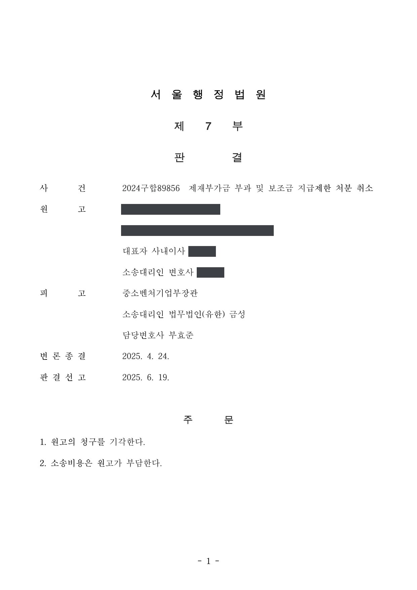
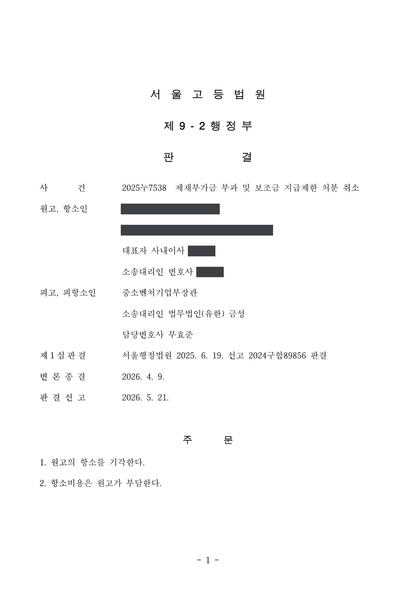
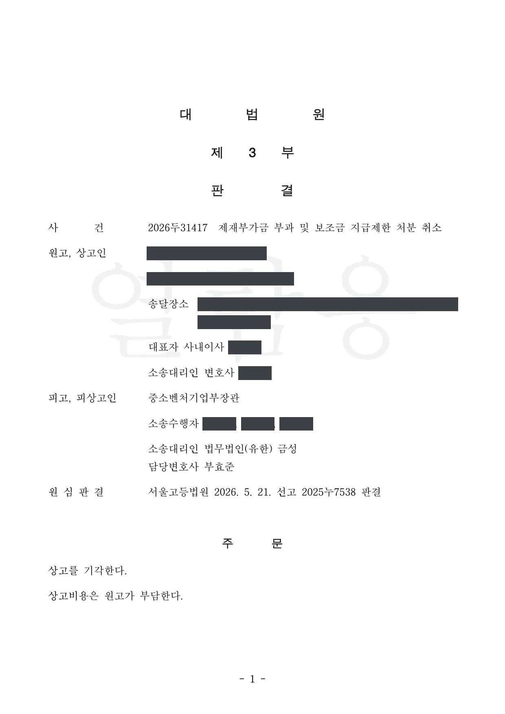

제재부가금 부과·보조금 지급제한 처분 취소청구 행정심판 및 취소소송 (1·2·3심)
중앙행정심판위원회 2024-11047 · 서울행정법원 2024구합89856 · 서울고등법원 2025누7538 · 대법원 2026두31417 · 담당변호사 부효준
판결문




사건의 요지
「보조금 관리에 관한 법률」 제33조의2에 따른 제재부가금 부과처분과 보조금 지급제한 처분에 관하여, 제재부가금 산정의 기준이 되는 금액(반환을 명한 보조금 총액)과 감경 여부, 재량권 일탈·남용이 다투어진 사건입니다. 중앙행정심판위원회의 재결에 이어, 취소소송에서도 1심과 항소심을 거쳐 대법원까지 처분의 적법성이 확정되었습니다.
주제별 사례제재부가금 부과처분
사건의 주요 내용
처분청은 보조사업자인 원고 회사에 대하여 「보조금 관리에 관한 법률」(보조금법) 제33조의2에 따른 제재부가금 부과처분과 보조금 지급제한 처분을 하였습니다. 원고 회사는 2024년 두 처분의 취소를 구하는 행정심판을 청구하였으나 받아들여지지 않았고, 이어 서울행정법원에 취소소송을 제기하였습니다.
소송에서는 제재부가금 산정의 기준이 되는 금액을 어떻게 볼 것인지(반환을 명한 보조금 총액이 기준인지), 제재부가금을 감경할 사유가 있는지, 두 처분이 재량권을 일탈·남용한 것인지가 다투어졌습니다. 1심은 원고 회사의 청구를 받아들이지 않았고, 서울고등법원은 2026년 5월 1심의 결론을 유지하였으며, 대법원은 2026년 10월 상고심을 마무리하여 처분의 적법성이 확정되었습니다. 부효준 변호사는 행정심판 단계부터 상고심까지 처분청을 대리하였습니다.
원고의 주장
- 제재부가금 산정의 기준이 되는 금액이 잘못 정해졌다고 주장하며, 반환을 명한 보조금 총액을 기준으로 삼은 처분청의 산정 방식을 다투었습니다.
- 제재부가금을 감경할 사유가 있음에도 감경하지 않았다고 주장하였습니다.
- 제재부가금 부과처분과 보조금 지급제한 처분이 재량권을 일탈·남용한 것으로서 위법하다고 주장하였습니다.
부효준 변호사의 주장
- 보조금법 제33조의2의 제재부가금은 반환명령에서 반환을 명한 보조금 총액을 기준으로 산정하는 것이 법령에 맞고, 처분청의 산정에 잘못이 없다고 주장하였습니다.
- 이 사건에는 제재부가금 감경 사유가 적용되지 않으며, 두 처분이 비례원칙에 어긋나거나 재량권을 일탈·남용한 것이 아니라고 주장하였습니다.
법원의 판단
1심(서울행정법원)과 항소심(서울고등법원)은 모두 원고 회사의 주장을 받아들이지 않고 두 처분이 적법하다고 판단하였습니다. 제재부가금 산정의 기준이 되는 금액은 반환을 명한 보조금 총액이고, 감경 여부와 재량권 일탈·남용에 관한 원고 회사의 주장도 이유 없다고 본 것입니다.
대법원은 2026년 10월 원고 회사의 상고를 받아들이지 않았습니다. 상고이유에 관한 주장이 「상고심절차에 관한 특례법」 제4조 제1항 각 호에서 정한 사유를 포함하지 않거나 원심판결에 영향을 미치지 않는다는 이유로 본안 심리 없이 상고심을 마무리하는 심리불속행 판결이었고, 상고비용은 원고 회사가 부담하게 되었습니다. 이로써 행정심판 재결과 1·2심 판결의 결론, 즉 제재부가금 부과처분과 보조금 지급제한 처분의 적법성이 그대로 확정되었습니다.
이 사건 기록과 원심판결 및 상고이유를 모두 살펴보았으나 상고인의 상고이유에 관한 주장은 ｢상고심절차에 관한 특례법｣ 제4조 제1항 각 호에서 정한 사유를 포함하지 아니하거나 원심판결에 영향을 미치지 아니한다. 그러므로 상고를 기각하기로 하여, 관여 대법관의 일치된 의견으로 주문과 같이 판결한다.
대법원 2026두31417 판결 이유(심리불속행)
※ 판결 이유 가운데 이 사건의 판단 기준이 된 부분을 그대로 옮긴 것으로, 당사자 이름 등은 가렸습니다.
이 사건이 보여 주는 것
보조금법 제33조의2의 제재부가금은 '반환을 명한 보조금 총액'을 기준으로 산정되므로, 보조금 반환명령 단계에서 반환 금액을 어떻게 다투었는지가 제재부가금의 크기까지 좌우합니다. 제재부가금 산정 기준과 감경 여부, 재량권 일탈·남용은 행정심판과 1·2심에서 거듭 다투어졌지만 결론이 바뀌지 않았고, 대법원도 심리불속행 판결로 상고심을 마무리하였습니다.
행정심판과 1·2심에서 같은 결론이 난 사건이 대법원에서 본안 심리 없이 끝나는 일은 드물지 않습니다. 처분을 다투는 쪽은 상고심에서 새로운 판단을 기대하기보다 1심에서 사실관계와 법리를 충실히 다투어야 하고, 처분청으로서는 처분서에 제재부가금 산정 근거를 분명히 남겨 두는 것이 뒤의 쟁송에서 중요합니다.
관련 법령보조금 관리에 관한 법률 제33조의2(제재부가금) · 상고심절차에 관한 특례법 제4조 제1항
관련 단어제재부가금보조금 지급제한보조금 관리에 관한 법률 제33조의2제재부가금 산정기준반환을 명한 보조금 총액감경재량권 일탈·남용행정심판 처분 유지항소심 유지대법원 확정심리불속행
비슷한 처분을 받으셨다면
행정처분은 처분이 있음을 안 날부터 90일 이내에 행정심판이나 취소소송으로 다투어야 하고, 기간이 지나면 돌이킬 수 없는 처분은 집행정지를 서둘러야 합니다. 처분서를 받은 날짜부터 확인해 드립니다.